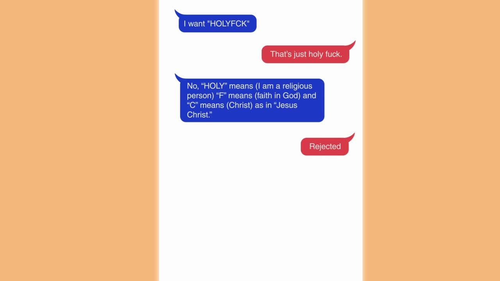

作品任務板Quest Board
每個專案都是一場冒險。點開看完整 case study！Every project is an adventure. Open one for the full case study!

MarxAI 星朋友 — PM Case StudyMarxAI "Star Friend" — PM Case Study
AI 陪伴社群 App 的完整產品設計：三大板塊架構、四資源經濟模型與蒙地卡羅模擬、AI 行為自動化 spec、LLM 品質評估流程。Full product design of an AI companion social app: three-pillar architecture, a simulation-validated four-resource economy, AI automation specs, and an LLM evaluation workflow.

MarxAI 星朋友 — UX Case StudyMarxAI "Star Friend" — UX Case Study
設計一個角色、一段關係、一個世界：敘事化 Onboarding、16 型人格角色系統、熟悉度／情緒／記憶三大對話模組、世界大廳 wireframe。Designing a character, a relationship, a world: narrative onboarding, a 16-type character system, three conversation modules (familiarity/emotion/memory), and World Hall wireframes.
城市科學實驗室 UROP — 資料工程 × 城市 AICity Science Lab UROP — Data Engineering × Urban AI
CSL 半年研究實習：從零建立城市資料 ELT 基礎設施、處理 350 萬+ 筆地理空間時序資料，並重新設計城市 AI 平台介面——橫跨資料工程與產品設計。Six-month CSL research internship: built a city-data ELT infrastructure from scratch, processed 3.5M+ rows of geospatial time-series data, and redesigned the City AI platform interface — spanning data engineering and product design.
CSL — 從資料基礎建設到 AI 介面設計CSL — From Data Infrastructure to AI Interface
同一段 CSL 實習的完整脈絡：三個相互連結的專案（ELT Pipeline → H3 空間分析 → City AI UI 改版），從資料底層一路跟到研究員使用的介面。The full arc of the same CSL internship: three interconnected projects (ELT pipeline → H3 spatial analysis → City AI UI redesign) — traced end-to-end from raw data to the researcher-facing interface.

EIDOLON — Future Luxury × Rolls-RoyceEIDOLON — Future Luxury × Rolls-Royce
柏林白湖藝術學院 × FH Potsdam × Rolls-Royce 跨校專題「Rethinking Urban Mobility」：為 RR 探索未來無車城市的奢華行動。從未來情境建構到概念 EIDOLON——收納於車側、自動展開的奢華滑板車＋智慧頭飾＋Live Concierge 服務。2026/3 於 BMW 慕尼黑總部展出，獲主管詢問專利意願。我負責情境腳本與全套分鏡插圖。A weißensee kunsthochschule berlin × FH Potsdam × Rolls-Royce joint project, "Rethinking Urban Mobility": luxury mobility for future car-free cities. From futures scenarios to EIDOLON — a self-unfolding luxury scooter stowed in the RR fender, plus a smart headpiece and live concierge service. Exhibited at BMW's Munich HQ (Mar 2026), where executives asked about patenting. I owned scenario writing and the full storyboard illustrations.

融樹：記憶的永恆守護Rong Tree — MODA Ideathon 2024
2024 數位發展部「點子松」好點子獎：為 2040 年的多元家庭設計一棵 AI 家族樹。以未來思考、兩輪 KANO Model 與使用者訪談反覆迭代，自 3,000+ 組中入圍前 30 強。MODA Ideathon 2024 Good Idea Award: an AI family tree for the plural families of 2040. Iterated through futures thinking, two KANO rounds, and user interviews — Top 30 of 3,000+ entries.
新版謀殺衛斯理官方網站Murder of Wesley — Site Redesign
主導官網完整改版：視覺風格定調、前後端需求溝通與時程掌控，並規劃文本外包控管品質，大幅提升品牌一致性與資訊流暢度。Led a full official-site redesign: set the visual direction, coordinated front/back-end requirements and timelines, and managed outsourced copywriting — sharply improving brand consistency and information flow.

Gather Town 線上劇本殺遊戲Online Murder Mystery on Gather Town
疫情停業期間，主導將實體謀殺推理遊戲移植線上：客製地圖、RPG 式搜證、自建文本系統、保留真人主持，成功開闢新產品線並獲玩家社群 4 星好評。When COVID closed the venue, I led porting the murder mystery online: custom maps, RPG-style investigation, a custom text system, live hosts retained — a new product line earning 4-star community reviews.

Californian Car Plates 資料影片Californian Car Plates — Data Video
DataNews 工作坊（FH Potsdam 交換）：鑽進加州 DMV 兩萬多筆個性化車牌審核紀錄，從資料分析、腳本提案到 AE 動畫，做成一支 85 秒的幽默資訊影片。DataNews workshop (FH Potsdam exchange): mining 20,000+ California DMV vanity-plate review records — from data analysis and script to AE animation — into a witty 85-second data video.